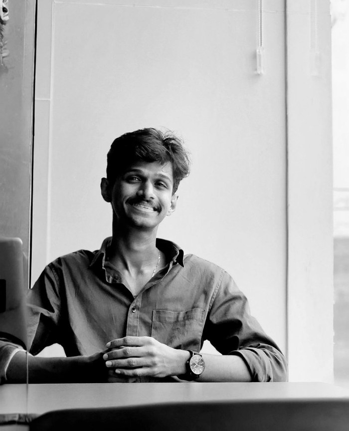
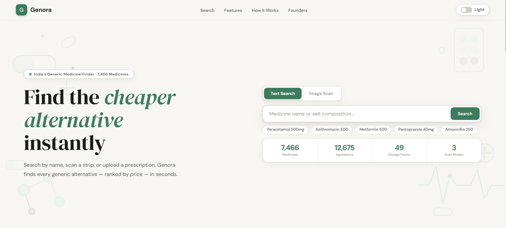
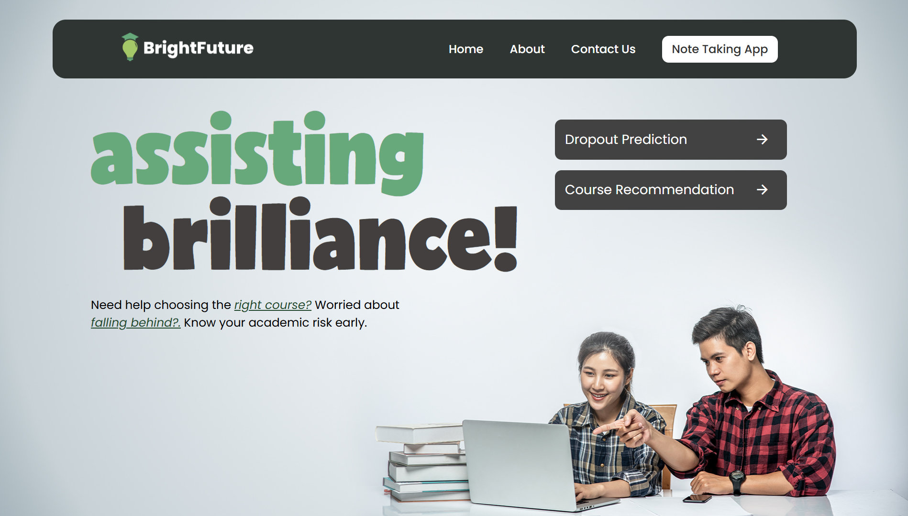
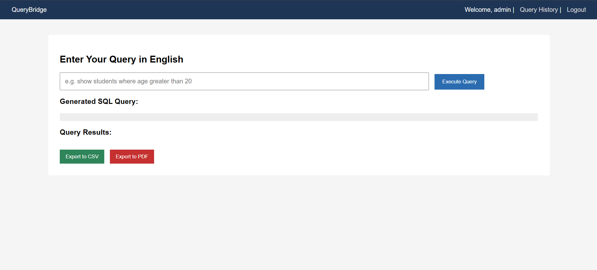
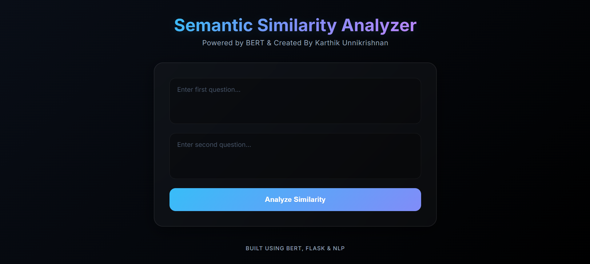

Your data builds
our future.

I'm Karthik Unnikrishnan — a developer and storyteller pursuing an Integrated MSc in Computer Science with Data Science at Nirmala College, Muvattuppuzha.
I write code that solves real problems — from predicting student dropout with machine learning to building full-stack web apps. Every project starts with a question and ends with something meaningful.
I'm deeply interested in the intersection of AI and real-world applications — exploring NLP, deep learning, and data-driven systems that create genuine impact.

India's Generic Medicine Finder — helping millions find affordable generic alternatives to branded medicines using salt composition matching and AI-powered prescription scanning.
↗
Predicts student dropout and delivers personalised course recommendations using ML — turning data into student success.
↗
Natural language to SQL — execute queries using plain English or direct SQL, dynamically interacting with databases through a Django backend.
↗
BERT-based semantic duplicate text detection with cosine similarity — glassmorphic Flask UI and real-time scoring.
↗Fluent in Python for data science & ML, JavaScript for frontend, C/C++ for systems, SQL for databases and R for statistical computing.
End-to-end ML pipelines, NLP model fine-tuning, statistical analysis and data storytelling — turning raw data into actionable insights.
Full-stack development from Django backends and FastAPI microservices to React frontends — with cloud, databases, and model deployment in between.
Five-year integrated programme covering CS fundamentals, data structures, algorithms, machine learning, statistical computing, NLP and full-stack development.
Completed Senior Secondary education with a core focus on the Computer Science stream.
Completed Secondary School Leaving Certificate.
Reach out — let's build something remarkable together.